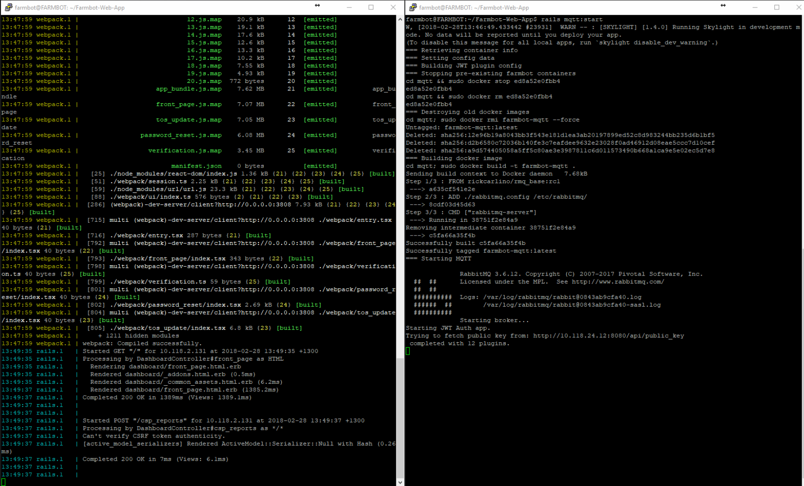
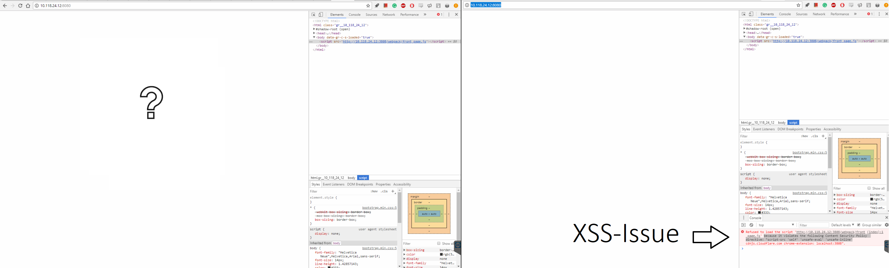
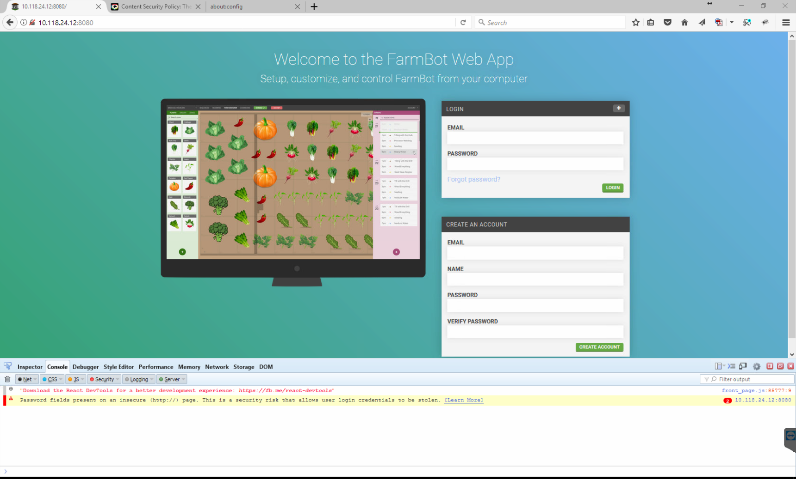
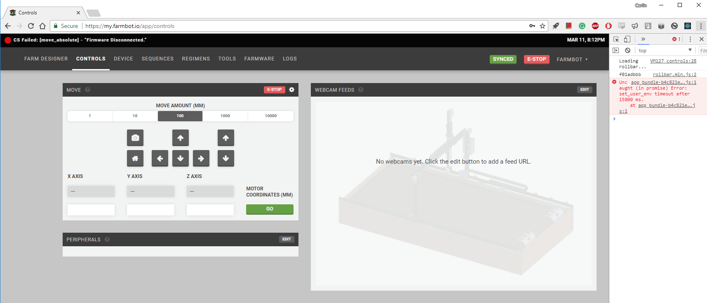
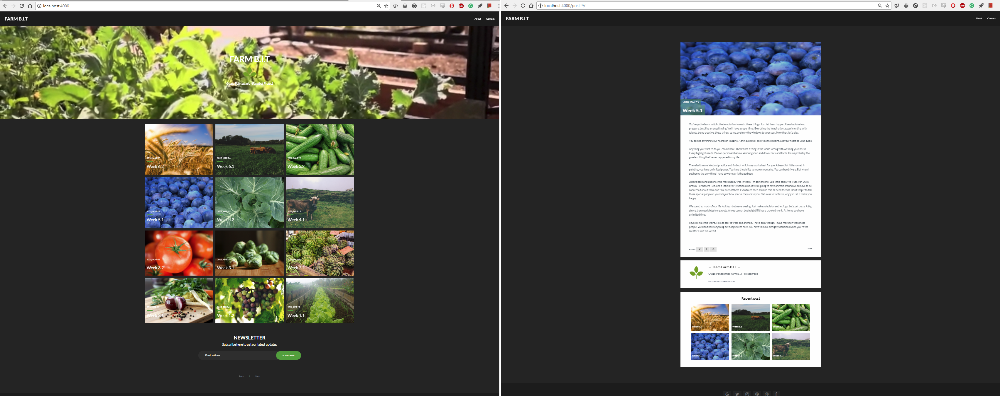
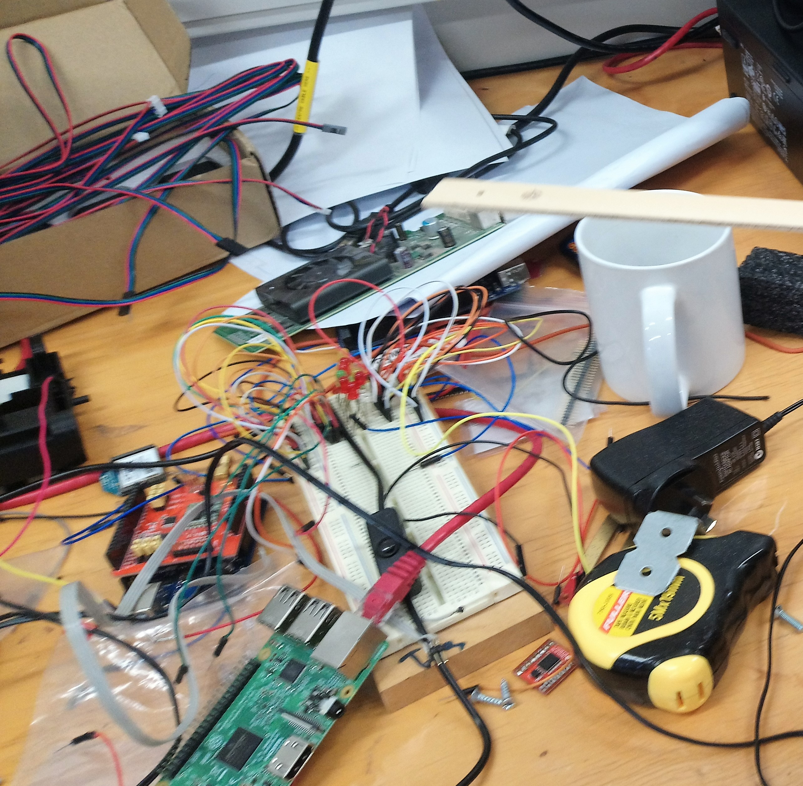
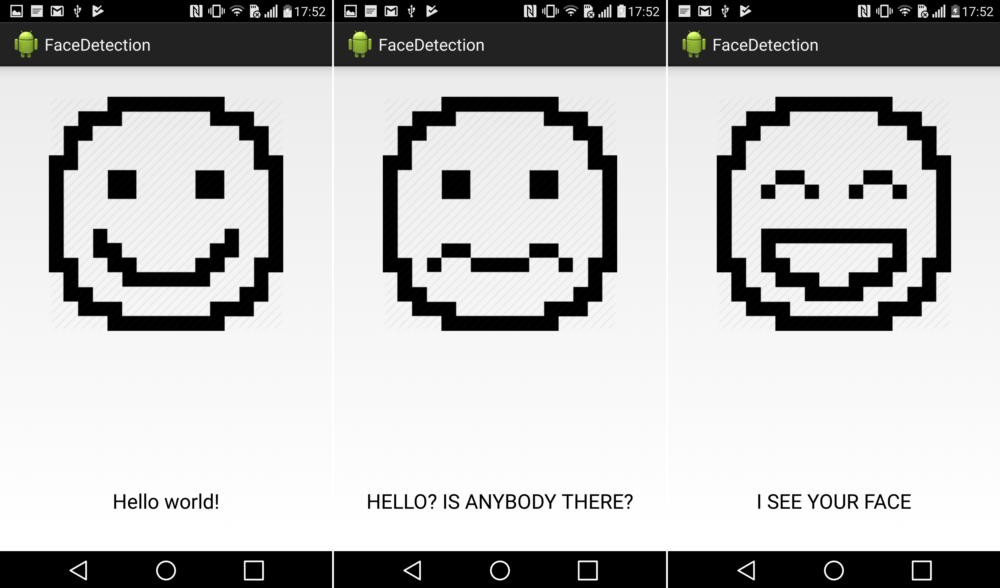
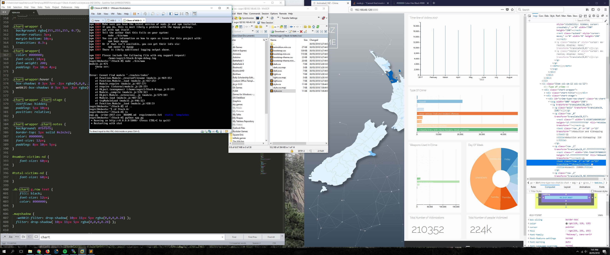
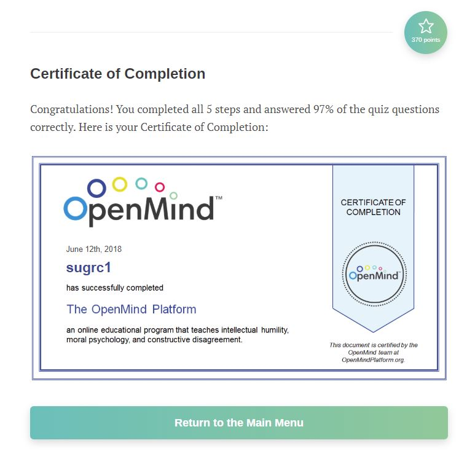

After careful deliberation I have decided I would like to move from the Systems and Security group to join the FarmBot project this semester if at all feasible. Although I feel the skills I would acquire from remaining in the operations group could be more effective in a plethora of jobs when graduating, I can’t help passing the opportunity to work on an idea I have personally been interested in creating on my own. I love the concept of full automation and it was my hope to one day develop automated agricultural systems within my own business. It’s a difficult choice as I feel like I am letting down my project leader again by abandoning the CodeLingo efforts, although I was about as useful as an ashtray on a motorbike I was the only one looking at the materials since last semester. Even though my hardware skills are rudimentary and the task is a daunting one, I feel I may approach it with much more gumption than my previous semester.
By the grace of any of the myriad gods (Adon I suppose in this case) I was permitted to jump into the FarmBot project! Meet with the other team members, some whom had previously worked on the preliminary stages wasted no time in conveying all that had been completed. A lot to be done! But the team seem like a real bunch of roosters and keen to see this through. So, getting back into the swing of things we each threw out some suggestions on what we should be doing to further the FarmBot project. The server side of things seemed to be primarily the only thing apart from the shopping list that could be started immediately, so being the project 2 student that had previously done some server stuff I grabbed Sam whom had already worked on the server in software engineering and we started to familiarize and re-familiarize ourselves with the software. Seems as though it has updated substantially since Sam's time, so a complete re-implementation sounds like a good start.
So, I was able to throw up another instance of FarmBot Inc's WebApp on the polytechnic staging pool with thanks to the extremely helpful lee in operations and security. This unfortunately, was not without its foibles. As is there seems to be a problem with the inherent cross site scripting (XSS) protections on default browsers such as chrome and Firefox that does not allow the user to run JS files within the window, perhaps also stemming from the lack of HTTPS currently employed by the web-app in its current form. No matter, a couple settings disabled and the first page is visible! next hurdle required some config hunting to re jig the web-kit development environment to serve content to the IP address and not localhost. It almost seems as if I need to rewire Farmbots application to serve web-kit content in a production environment rather than the development environment it is in currently. So, it’s sort of working... a bit rickety so I'm not optimistic on how the Raspberry PI is going to go...
"New server implementation up and running"
"Finding some breadcrumbs leading to the underlying problem"
Alright, this wasn't exactly a surprise, although, I did intend on at the very least seeing the Raspberry PI connect to the FarmBot hosted servers. Throughout the day me and Sam have to no avail been able to connect the PI up to either server. first obstacle being that of the OP WIFI network and its single sign on predicament, as the PI needs to use the OP intranet but can’t log onto the network with a specific user’s credentials. Sam in his software engineering experience informs me that the guest network is also not an option. another band-aid can be placed on this briefly with the use of the PI's Ethernet port, although I doubt anyone wants to run a cable from D block to the garden. I suppose it’s time to brainstorm a bit.
As required in this Project we are to complete 4 Professional development activities. For my first I decided to see what all the hoopla surrounding the Code Craft meet up was about. Professional indeed I could barely keep up with most of the talks in progress, but there were some great presentations and knowledgeable peoples dishing out some intriguing take home messages. First a man representing NZ Tech spoke of the organization and how it was enveloping many tech companies in Christchurch and the north island and extended invitations to any Dunedin companies interested. The next was a perplexing talk on self-written modules in JavaScript for websites (most if not all went above my head) the last presentation educated us on if re writing your code on older projects is worth the effort once certain considerations are taken into account. Certainly, a great environment to get amongst, not just for the presentations offered but the amount of IT professionals present in the room would prove for amazing networking, help and support in whatever project you had underway.
As it turns out FarmBot Inc update their software regularly. Keeping true to their word of open-source software (Hardware’s a different story) luckily, we weren't the only ones having cross site scripting browser issues and the issue was resolved promptly after making adjustments to their web pack implementation. After a good old' fresh from the press instillation was complete the web-app was golden, although it’s still early days to say anything regarding the raspberry pi connectivity.
Meanwhile in the background of the FarmBot lair keys collided with fingertips to produce a mass of documents outlining hardware specifications and the costs associated, this, we knew, was going to be the largest challenge the group would face, budget restrictions.
"Login page for Farmbot Web Application without the XSS security concerns"
To circumvent some of our budgeting problems we spoke to Epicentre over in Engineering block to help us create some aluminium parts and 3D printed peripherals. After a short volley of emails our project leader Rob had set up a time in which I would accompany him in talking to the heads of Epicentre. First however there was a small course that needed completing, preaching the safety precautions that must be adhered to within the building. with the precursor paperwork completed we discussed FarmBot needs and the ways in which we could utilize Epicentres help.
"The MakerBot to make our bot"

Employing Laiken to accompany me to the engineering block as he had been viewing and archiving the various auto-cad files associated with the manufacture of FarmBot, we handed over the files and Epicentre got under way.
After some strenuous configuration and thinking it may be a MQTT protocol issue associated with OP's network, me and Sam finally connect the Raspberry pi! As great as this is we still don't have anything else relating to the electronic hardware that communicates through the server such as the motors/drivers/ramps shield.
"Connected but not quite useful"
I wander over to Epicentre to inspect the progress and find there was a small problem with the 3D Printing. Although not a particularly large issue ;) as these components will be utilized only when the gantry and sides have been completed. Turns out that the Auto-Cad files where in the wrong sizing format, lets hope it doesn't happen again
"What is this?? a Farmbot for ants?"

Whilst I was present in the building I retrieved some aluminium parts, such as the extrusion mounts and motor enclosures. Still not particularly useful yet without the extrusions and the fixtures to mount everything together but with the box knocked together I could start to see the overall picture of FarmBot start to form
"Base of Farmbot (weights used in vein attempt to straighten out the box)"

With not a great deal to do without more parts and the budgeting battle of 2018 still rife with conflict, I decided to create a FarmBot Blog so we may spin up some entries and show anyone who may be interested in our very slow progress what we have been doing
"Farmbot blog structure"
Looking ahead me and Rob decided to take the initiative and seek some alternative funding sources. We combed the Dunedin council’s literature for anything pertaining to grants given to community projects. We came across a few sections detailing that there was indeed an option for community projects that fit well within our parameters and that it may be a plausible benefactor for FarmBot. We drove down to the council building to pencil in an appointment
Still waiting on funding and fundamental parts for server and FarmBot operation I hook up the raspberry pi to the server then connect the mega to a breadboard full of L.E.D's in hopes of understanding which digital pins correlate with what FarmBot action by observing the L.E.D's response to the servers interaction, whether it be gantry movement or peripheral operation.
Just when I thought we had been able to successfully connect the raspberry pi and Web App together connecting the mega and pi to server turned out to be exceedingly difficult. after a plethora of failed attempts, the raspberry pi fails to communicate entirely with the Web App and I am very unsure which link of the chain is going wrong. I'm not going to lie, this was a truly enraging task, I was veering totally off course and it was proving fruitless
"Current electronic components Featuring LORA WAN"

Unfortunately I'm Still having difficult time connecting the server with the pi and Arduino mega, perhaps this is because the system works differently when exposed to the Ramps shield? I'm not certain. Even after updating the Raspberry PI OS it may be necessary to re-implement the server. Getting rather proficient at it now!
After getting nowhere Rob enters the room and explains that he is wrangling people to join him down at the Dunedin start-up weekend, apprehensively I start to decline, although on obtaining the information that is a professional development opportunity I agree to see him and Cade there. The event was held above the Lonestar in town and was quite nice, there was food and drinks and a chance to mingle before some of the activities, one such activity involved creating a marketable product with two completely different words - ours was something along the lines of fireproof chain mail underwear for firemen. Another great environment for networking with I.T professionals who also had their own unique ideas. I remember discussing how an entrepreneurial Site Worker would go about making a Web application for his company to log specific on-site jobs and the most relevant technologies to achieve this, he implored me to continue with the Dunedin start-up competition and join his group, but I had to politely decline.
"Totally intentional grainy photo displaying attempts to gage digital pins used in Farmbot function"
HOLIDAYS - Prioritized other assignments
HOLIDAYS - Again continuing to prioritized other assignments
Only after the break I truly understood that in terms of work commitment I had been laking before and within the holidays, and it was time to start delivering more quality and quantity of work in the next half of the semester. I guess me and most others of the group could use excuses such as "these parts haven't arrived so I can't achieve anything yet" although I believe there is a certain amount of truth to this excuse, there are other ways I could have used my time more efficiently and I'll own up to that
As the first meeting of the second half of the semester approached me, Sonny and Sam were summoned before Rob, Adon and Vaughn. Plucked from the project room and sat at the meeting table we were given a rather intriguing proposition. Vaughn spoke of how he was asked from one of the higher ups within Otago Polytechnic to recreate a "Boxie" robot of the same likeness to that of the viral sensation, for the purpose of using it in the upcoming tech-week event in the next 3 weeks
Knowing that this was quite the undertaking Vaughn and Adon made sure to express that we try our best and if we don't succeed and we can’t make the event, we can’t make it and that’s fine. With a fresh challenge albeit a formidable one we apprehensively agreed. Adon and Vaughn suggest the idea of making it with micro-controllers and raspberry pi, seems like the most logical decision to allow full customization and creation of the robot. I head back to the project room and brainstorm some ideas on how this can work in my notebook and on the net. I realize we are going to need a bunch of extra things like camera, lights, speaker etc not even to mention how long it would take to recreate the provided robot chassis and tracks from Epicentre. Understanding with first-hand experience from the FarmBot group that there is no room in the time frame for that kind of budgeting or build operation I raise the point of using a red bot and android smart phone to work in tandem as two independent systems to serve the robots purpose. Although when I raise the point I find out that Vaughn and Adon have already thought of that and feel the micro controller route is better. I won’t let up, knowing that the phones inherent sensors and already provided red bot is the optimal solution, I made many points to specify that the phone could be easily tooled to take user input and display interesting content such as a face on its screen. I feel I drove the point in well enough because we are now going to use this system.
"Very Rough sketch depicting how this option would lead us to victory"

After we agreed on using the smart phone, things started to look like they would fall in to place well, we had all done robotics and knew we could utilize the line following and black tape detection code for our Boxie project. Sam who had previously been in the mobile development paper and project group informed us that she had already written a survey application, with just the interactive face needing to be done I set out to re-learn android studio. I'll admit that I foolishly tooled my course of study around not doing programming papers, so I found it quite challenging to produce anything in android studio. Through the weekend I wanted to make the animation of the face and do so in an interactive and interesting way, so with all of these tools inherent in the phone I got to work. I really thought an intriguing way to make Boxie more interactive with the public was to use the camera to detect faces and respond appropriately, if Zuckerberg can do it why can’t I?
"Prototype application for Boxie"
In today’s group meeting, we were accompanied by the man who prompted the creation of this group, Nigel. we asked some rudimentary questions about Boxie's ultimate operation, but the take home message was of the same context to the first mission directive issued by Vaughn and Adon. Also within the meeting I presented my face recognition idea, but it was ultimately decided against as it was superfluous for the time being, which I had to agree.
For my third professional development I could help explain the FarmBot project to new students of Polytechnic, giving them an insight into the FarmBot projects details and operation
Ning and sonny start to spearhead the red bot code, as they seemed to remember where their old robotics line sensing code was, seeing as it is trivial I leave it to their capable hands. Trying to make myself useful I start to work on a prototype body for Boxie, Sonny comes in to help brainstorm this task. After a few hours we compile a very basic frame it’s pretty rough but we get a good vibe for what we need and how to go about this.
"First prototype for Boxie’s frame"

All is going well when me and sonny think we find a pretty good solution, disregarding the horrid monstrosity we created last week we meet the body requirements for Boxie with some spare boxes, spare polystyrene inserts and assorted materials strewn about in the project room.
"Boxie’s new body, whilst also testing the look of various boxes for the head"

One thing is starting to get to me though, I'm having some difficulty figuring out how to hold the phone and open it back up again. I find a solution when I re-purpose the Farmbot stepper motor box by shortening it to the phones specifications.
"All squared up!"

As Boxie rambles about the pen, Adon gets excited and throws us another curve ball when he asks for a swivelling head, we say that’s easy and sonny slaps a servo on and we fashion out a place for it. Hey presto it works, until it decapitates itself with its own momentum. hopefully with the aid of some strong super-glue it will stay on. Buying some glue in preparation I stow it away in the project room until I know well and good that the head can be attached
"Swivel head upon the servo, angled up for greater interaction"

Thursday rolls on in and Boxie looks like The real McCoy, zipped up and ready for business and working correctly. Things are falling into place unexpectedly well...
"What could go wrong?"

Friday dawns, Murphy's law is in full effect and trepidation starts to flow over me, seems like everything goes awry code wise, sonny and Ning are having some conflicts over the code, I try to make heads or tails of the situation but I honestly think it’s a bit dangerous to throw my hat into the ring when everyone’s wound up so tight. Ning seems to shoulder the burden So I decide to get on to it with a fresh head in the morning and suggest he do the same.
Tech-week arrives on the cool Saturday morning, I meander into tech and learn Ning the poor dude hasn't slept yet! but that glorious son of a gun seemed to get it working for the most part, apart from the servo going haywire I'm grateful for all his effort. with time a precious commodity I slap Boxie together and glue the head on in hopes of a strong bond and bound down to the hub. Head falls off almost immediately. I'm sweating profusely, so I run Boxie back down to the hardware room where I fire up the gun and glue the head mounts directly onto the body. after the myriad apologies to the group, the day seemed to go alright, we actually produced something in a tight time frame with minimal resources and guidance, and I'm proud of everyone for doing what they did.
"Depiction of my emotions before the event - Messy"

After a month, its back to the old grindstone, we find out from the other FarmBot members that it happens to be the Arduino mega causing the difficult connectivity complications. So, I fire up the server and we all post up around Sam and give him some time to sweet talk the raspberry pi into communicating. Turns out the sly dog was dropping a "http://" into the ip address field, seems to coerce the mega and pi to start working together, unfortunately after this accomplishment its main functions remained a locked mystery to us for the proceeding hours.
Adon updates me on what’s happening with the Boxie or "DOT" robot. turns out were going to refine and show it off at showcase in a few weeks’ time. Oh lord, I hope it goes smoother this time.
On a side-note I was also requested to display some of the web 3 visualization site, no problem... hopefully
So I come back and Adon seems to have advised and implemented with Ning my old dead-man switch idea for Boxie, I'm a big fan! Not only does it free up the light sensor problems, I suggested the idea a month ago :3, self-praise aside it works much better despite a few foibles associated with the new code. We all start to look at it and throw in our 2 cents. After some deliberation we come up with some more refined states for DOT's stop and drive function. For the short times I was looking at the code I was quite pleased with the red bots / Arduino operation as it utilizes a lot of red bot and hardware specific libraries making creating Finite state machines relatively simple.
I construct a new head for DOT as the other one is looking very decrepit, however it’s getting more difficult to find cardboard, I'm glad we had adopted the android and red bot system or else we wouldn't have gotten anywhere near to the tech expo, we lack everything! funding, glue sticks and cardboard!
Things never go swimmingly for long, Adon saunters into the room suggests another box for a cleaner design, I agree, although suggesting revitalizing the existing box instead as it is now a tailor fit for the hot glued mess of the red bot. I avert my gaze for mere seconds (rookie mistake) only to regain visual contact with the now mutilated cardboard box. As I clutch the desecrated remains of DOT's body Adon laughs maniacally, slowly descending into a fiery pentagram etched into the lino below, he recites an omelette idiom in Latin backwards before disappearing from sight.
"Good night sweet prince"

So I get to work on the new body it takes me a little box creation investigation, but it turns out quite nice, Adon was right, it looks a lot cleaner than the last iteration.
"Clean"

I fashion up some more cardboard peripherals to help contain the batteries on the back of dot since the last batteries where mounted on the top limiting DOT's servo motion, I then attached the new head to the new servo mount with glue. I sure hope it remains attached, it’s really quite perplexing to find a structurally sound solution to something made of paper on a $0 budget.
"New servo and bracket, hopefully its enough"

After gluing the battery-pack on I ran DOT around the pen with all her limbs attached. For the most part I think it was running well enough, although, I couldn't help noticing small twitches coming from the head mounted servo, that also wasn't completely centre... I'm holding onto the hope it was resulting in this because the body wasn't fixed to the red bot frame yet. I sure hope things don't pan out in the same manner as last time.
Only one thing to do now, mount the body to the chassis, thing is, I can’t use zip ties. To make this unit look cleaner I'm going to glue it straight on, and there’s no room for error. After triple checking the bots code and wiring I attach a small USB cable to the red bot just in case we need to make any modifications to the code, we can do so in a pinch. I warm up the glue gun and get ready for some precision gluing. The glue starts to spout out and I'm covering the supports in a small layer first, then of course, the gun starts to excrete glue out of the wrong hole. So, the gun seizes up rendering the tool useless. Nevertheless there is still glue so I press the box on top and hope that it was enough to survive the showcase.
"USB cable added for posterity"

"Boxie all glued up, looking lean and mean"

For my forth and last Professional development I complete the diversity course, it was quite insightful, instead of revolving around my expectation of race, gender related diversity it was actually relating to thought diversity and how to increase this important factor to mitigate certain pitfalls such as group think. To my delight Many of the things taught in the course were in my earlier professional practice class, covered by Mrs Love in late 2014
"Certified"
The dreaded showcase was now upon us. Coming into polytechnic early to assess the situation before Showcase, I find that the bot had been tampered with and the head was now quite loose. With the head already attached to the metal bracket there was no way to tighten the servo screw anchoring the head in place. Still much time before the showcase I feel I can apply a generous amount of glue to the problem area and settle the matter. Layering on copious amounts of super glue and scratching up a "DO NOT TOUCH" sign I return home to fulfill one of the hardest tasks of the evening, finding something appropriate to wear.
Adorning a ragtag assortment of what some may call formal wear I step through to the hardware room to find someone has completely disregard the integrity of a mans sign and removed DOT from the room. Finding DOT and inspecting the head area, I come to the realization that the glue has not set properly, beads of sweet appear upon my brow. Out of time and out of super glue I frantically search the hardware room in hopes of a solution. Salvation arrives in the form of an identical hot glue gun to my now broken one. With the head again supported with a ridiculous amount of glue, I don my dinner jacket and swiftly pull up my web 3 visualization site, good thing I spent a bit of time preparing it before the event.
All in all the event was above satisfactory, with DOT's head issues mitigated I was free to mingle and catch up with some old graduates of the B.I.T and observe a number of fine student works. Whilst explaining the inner machinations of my web 3 assignment to some previous graduates of OP, Adon interjects with a challenge to cripple my website. Although I'm sure given enough time they could bring the website to its knees I was grilled and pressed by some of the best students OP has seen, and I feel I and my website held up quite well, certainly filling me with a sense of pride. With guests and alcoholic beverages dwindling I felt it was time for me to also withdraw for the night
"FarmBot components on display the night of showcase"

There wasn't particularly many meetings, however we were always situated in the same hardware room where we could exchange information effectively. Although I may admit that I was not present for a small number of days which fell on project time, I was still very connected to what the group was doing and my part within it.
Again I feel I handled this within a certain standard, although I can understand there is always room for improvement. namely when I was absent from the project room I could have easily notified the group of my apparent absences or how my project related works was progressing.
To answer these questions with the utmost honesty I started my Blog posts at a respectable time but only returned to them after large enough period of time. I can admit that my documentation was lacking substantially with FarmBot. Not limited too but a lot of what I had done was routing around previous versions of the server and trying to understand some of the intricacies in which the op network was / may infect the communication between bot and server and I failed to record many of this.
I honestly feel like I did quite well in this category, a lot of what I did this semester was completely different to my previous experiences. Most notably DOT, there wasn't particularly much coding related challenges on my part although I was involved in all aspects of its creation. First I started off writing an app in android studio for DOT after not using the software for years. Second I helped diagnose the dead-man switch related problems plaguing DOTS operation. Thirdly I then went on to create most of the necessary hardware which, in my opinion was quite difficult even if the majority of building material was cardboard.

Now I didn't actually do much coding apart from my face recognition App, which to be frank was below par, but more importantly I feel I had a certain amount of pride in the work I produced for the FarmBot server and DOT producing some quality works.
I feel in most scenarios of this semester I employed adequate levels of development best practices.
My main problem areas where that of the Farmbot sever iterations, I most definitely could have been updating it and its dependencies more frequently.
Overall I feel that through all of the various changes in project I can safely say I was an integral part of each teams function and co-operation towards end goals.